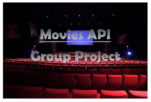
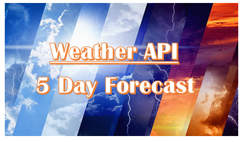

About Me
I currently work as a Logistics Coordinator for a lumber company out of Minneapolis servicing commercial and high-end contractors. I direct a group of drivers and yard staff to complete daily tasks at hand and ensure efficient accurate deliveries.
Previous to this I was an Operations Supervisor for an oxygen therapy company out of St. Paul. I oversaw a fleet of 25+ drivers and worked with our customer base in depth on a daily basis. This included residential customers along with nursing homes and hospitals. A few of the skills I inherited while working there include analyzing data, problem solving in a high stress environment, managing multiple tasks, and gain understanding of basic business concepts.
I have 10+ years of being in the customer service industry. Coming from this background I know that not all customers are the same. They all have different wants and needs and thoughts of how a job or service should be done. One of the main focus points to offering exceptional customer service is listening to your customers needs and finding a way to solve them. This is also true with management and colleagues in the fact that the thought process of how to get something done may be different. With different point of views, the end goal must be the same. Ensure the customer is happy.
These aspects show to be true in the web development world as well. As there are many different combinations to complete an assignment/ project the question is, is it what the customer envisioned/wanted or better. I feel with my new passion for the web development world and the understanding of team work and customer needs I can become of value and make positive contributions to my team at hand.
My ResumeMy Work
- 
- 
{kind=link}
{kind=link}